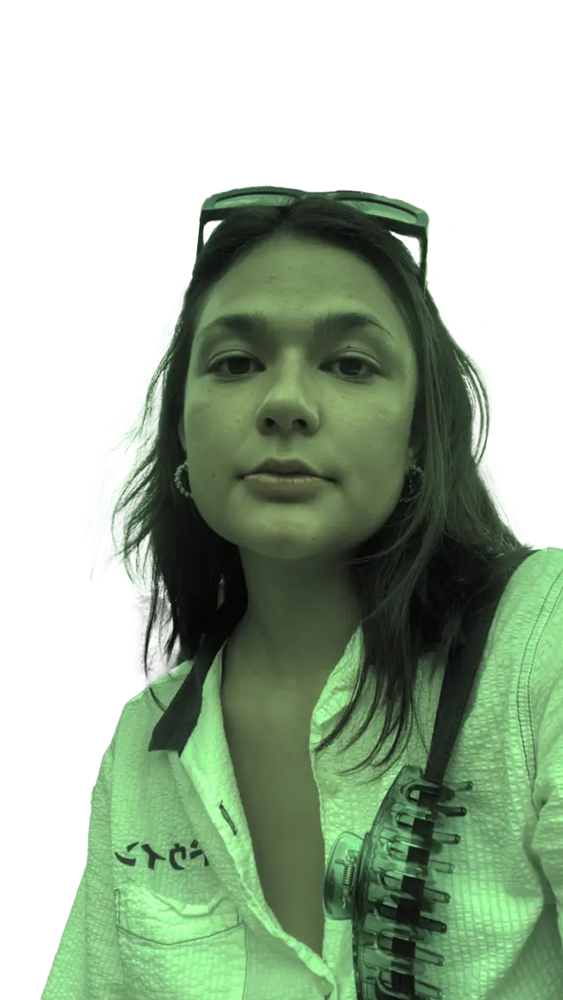

Den studerende
Hvorfor multimediedesign?
Teknik og kreativitet er mine to styrker. Det havde jeg i tankerne da jeg skulle vælge en uddannelse. Multimediedesign talte derfor meget til mig da jeg læste om studiet. Det lød meget spændende, at studere noget jeg personligt selv ville blive bedre til og på samme tid kan lide.
